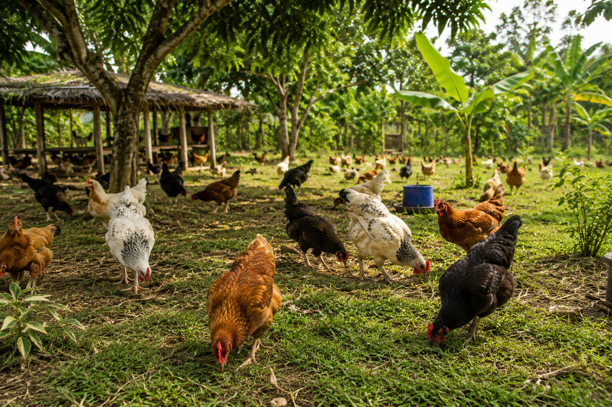
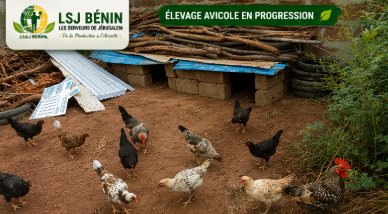
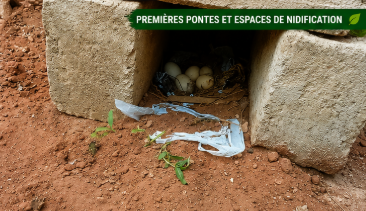
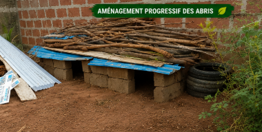
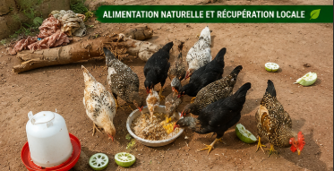
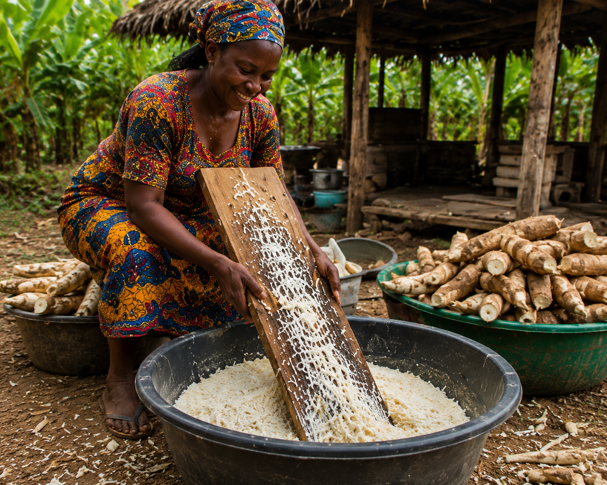
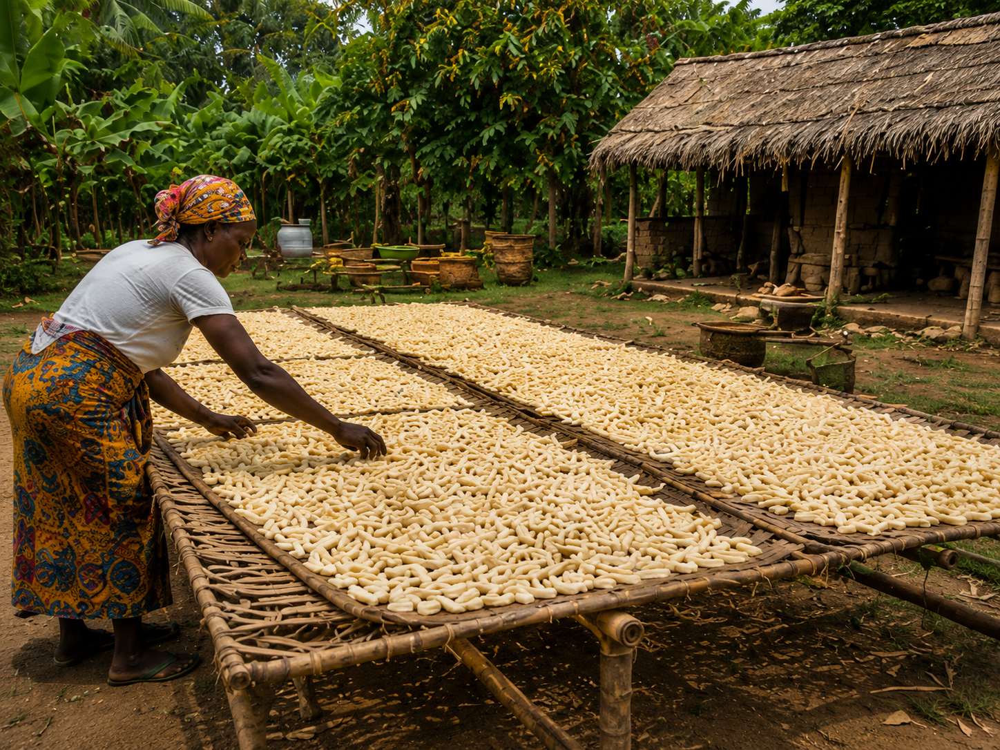
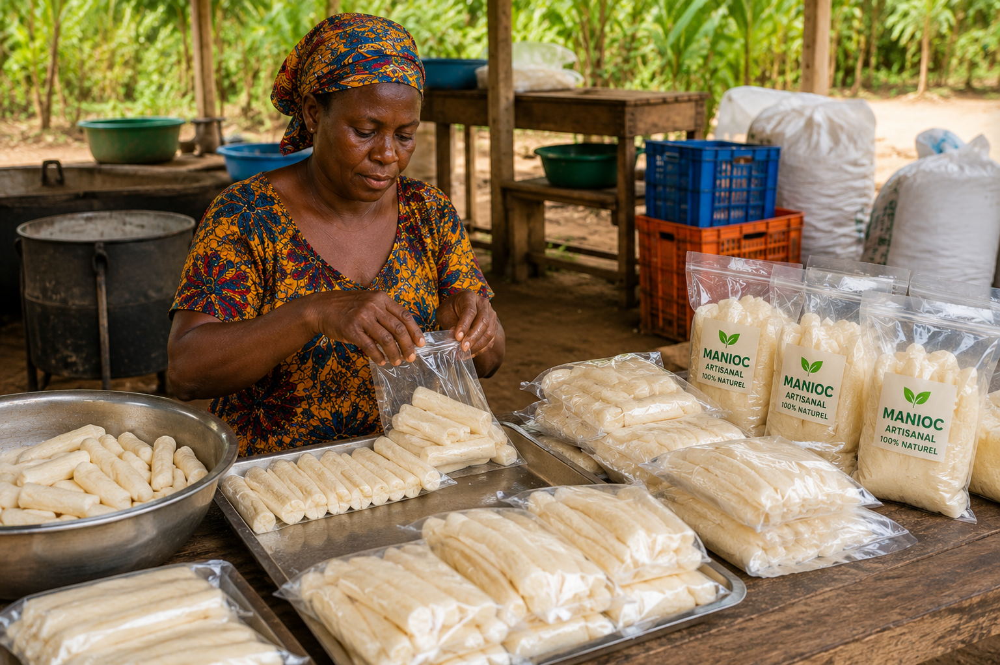

Élevage en plein air
Document photographique des activités et de leur évolution progressive.
Une présentation visuelle du travail de terrain porté par Jude Pelaurg GBETOHO : élevage, agriculture, transformation locale et progression vers un modèle plus structuré de ferme-école et d'autonomie locale.
LSJ avance progressivement avec les moyens disponibles. Le projet documente ses réalisations pour distinguer clairement les activités déjà menées des développements envisagés.
L'objectif est de relier production agricole, élevage, transformation, apprentissage pratique des jeunes et économie circulaire, sans présenter comme acquis ce qui appartient encore à la phase de développement.
Un élevage local évolutif, avec amélioration progressive des espaces, de l'alimentation, de l'abreuvement et de l'organisation.

Document photographique des activités et de leur évolution progressive.

Document photographique des activités et de leur évolution progressive.

Document photographique des activités et de leur évolution progressive.

Document photographique des activités et de leur évolution progressive.

Document photographique des activités et de leur évolution progressive.
La transformation et le conditionnement permettent de conserver davantage de valeur au niveau local.

Valorisation progressive d'un savoir-faire local et amélioration de la présentation du produit.

Valorisation progressive d'un savoir-faire local et amélioration de la présentation du produit.

Valorisation progressive d'un savoir-faire local et amélioration de la présentation du produit.
Ces éléments sont présentés comme objectifs de développement et non comme installations déjà opérationnelles lorsqu'ils ne sont pas encore réalisés.